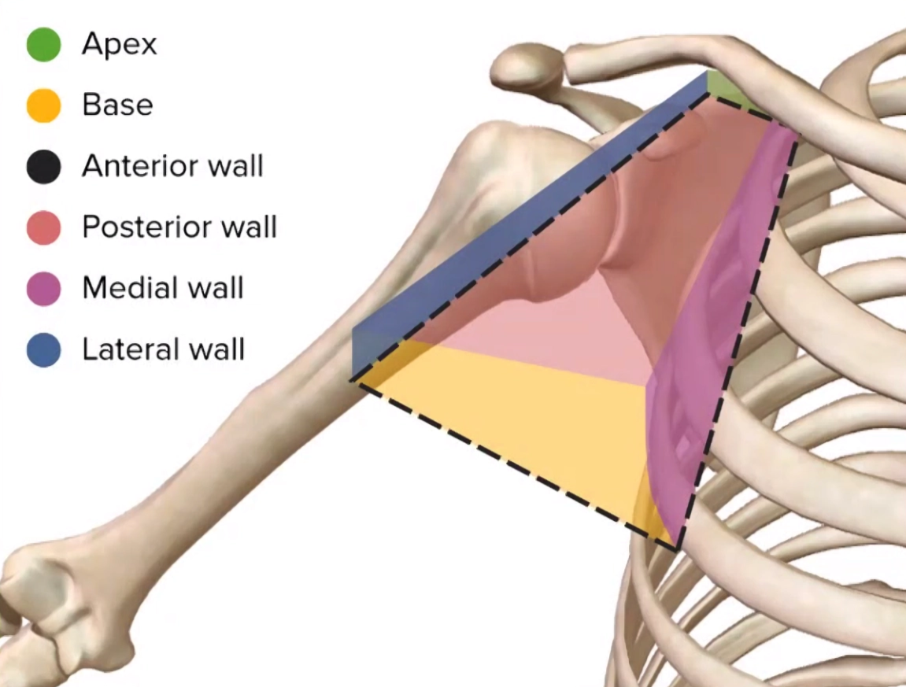
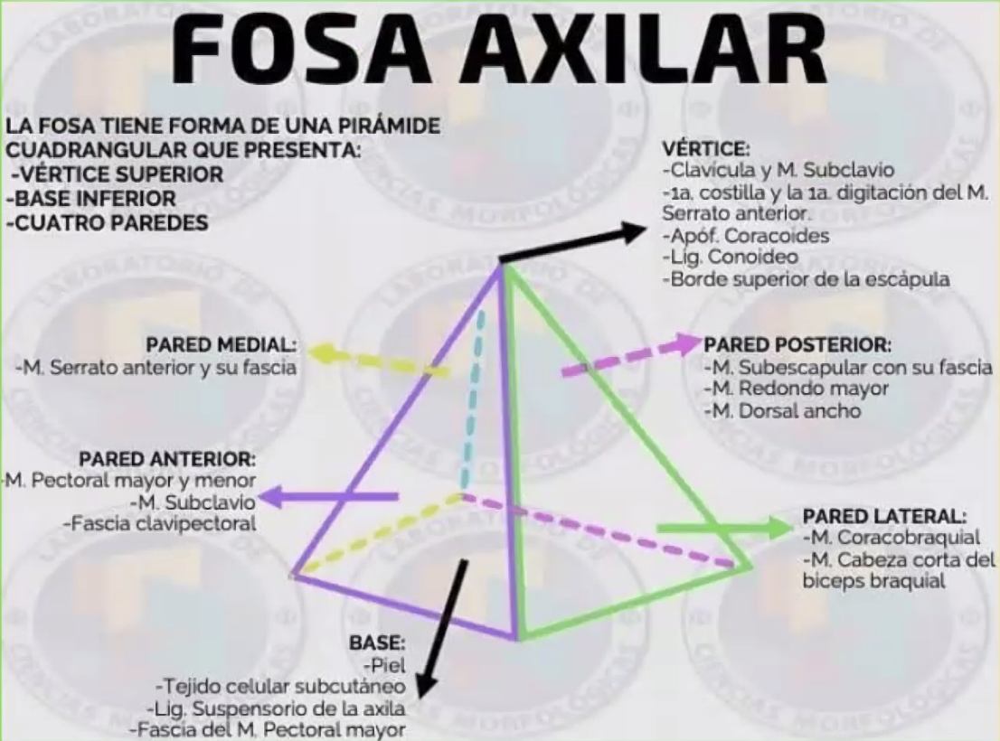
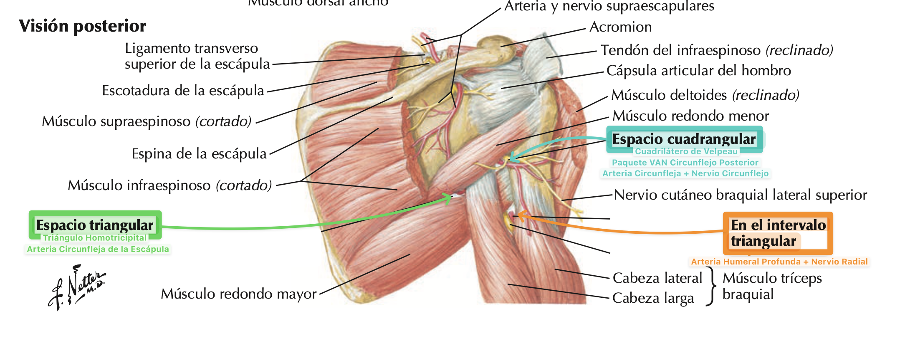

Miembro superior / Topografía
Topografía Miembro Superior
Regiones, límites, planos y relaciones anatómicas.
Hombro
Une el miembro superior al tórax. Sus limites son:
- Superior: Clavícula + Borde Superior de la Escápula
- Inferior: Plano Horizontal por el Inferior del M. Pectoral Mayor.
- Posterior: Espina de la Escápula.
- AnteroInterno: Región Mamaria.
Comprende tres regiones: Región Axilar, Escapular y Deltoidea.
En la Región Axilar encontramos la Fosa Axilar, presentando una forma de pirámide cuadrangular, un Vértice hacia superior, una Base hacia inferior y cuatro caras.
Referencia visualImagen 01
{kind=link}

Región Axilar
Fosa Axilar:
- Vértice: Clavícula y M. Subclavio + A. Coracoides + 1a Costilla.
- Base: Piel entre la parte interna y superior del brazo y la pared externa del tórax.
- Paquete VAN Axilar (Arteria + Vena Axilar + Plexo Braquial)
- Ganglios Linfáticos Axilares
- Paredes:
- Anterior: Clavícula + Borde Inferior del M. Pectoral Mayor + Surco Deltopectoral + Límite externo de la región mamaria.
- Interna: Costillas + M. Serrato Anterior.
- Externa: Grupo Anterior del Brazo
- Posterior: Músculo Subescapular, Redondo Mayor y Dorsal Ancho.
- Cuadrilátero de Velpeau: Cuadrilátero Humerotricipital
- Límite Superior: Redondo Menor
- Límite Inferior: Redondo Mayor
- Límite Externo: Humero
- Límite Interno: Porción Larga del Triceps.
- Contiene al Paquete VAN Circunflejo Posterior.
- Triángulo Omotricipital:
- Límite Superior: Redondo Menor
- Límite Inferior: Redondo Mayor.
- Límite Externo: Porción Larga del Tríceps
- Contiene la Arteria Subescapular
- Triángulo de Avelino Gutierrez:
- Límite Superior: Redondo Mayor
- Límite Inferior: Porción Larga del Tríceps
- Límite Externo: Húmero
- Contiene al Nervio Radial y la Arteria Humeral Profunda
- Cuadrilátero de Velpeau: Cuadrilátero Humerotricipital
Referencia visualImagen 02

Referencia visualImagen 03

Referencia visualImagen 04

{kind=link}
{kind=link}
Región Escapular
- Fosa Supraespinosa
- Fosa Infraespinosa
Región Deltoidea
- Superior: Clavícula + Acromiom
- Inferior: Inserción Distal del M. Deltoides
- Anterior: Triángulo Deltopectoral
- Posterior: Línea Vertical por la Articulación del Hombro
- Surco Deltopectoral: Vena Cefálica
Brazo
Porción del miembro superior entre el hombro y el codo. Sus límites son:
- Superior: Línea circular horizontal por debajo del M. Pectoral Mayor
- Inferior: Línea circular horizontal que pasa por arriba de la fosa del codo.
Dividido 2 regiones: Anterior y Posterior
- Región Anterior
- Superior - Inferior: Iguales.
- Externo: Línea Vertical que pasa por el Epicóndilo.
- Interno: Línea Vertical que pasa por la Epitróclea.
- Canal Bicipital Interno:
- Límite Externo: Músculo Bíceps Braquial
- Límite Interno: Músculo Pronador Redondo.
- Piso: Músculo Músculo Braquial Anterior
- Contiene el Paquete VAN del Brazo (Nervio Mediano + Arteria y Venas Humerales) + Arteria Recurrente Cubital Anterior + Vena Basílica
- Canal Bicipital Externo:
- Limite Interno: Músculo Bíceps Braquial
- Límite Externo: Músculo Supinador Largo
- Piso: Músculo Braquial Anterior
- Contiene a el Nervio Radial + Arteria Recurrente Radial Anterior + Vena Mediana Cefálica.
- Regios Posterior
- Limites Iguales a la Región Anterior
- Conducto Radial (Canal de Torsión):
- Nervio Radial + A. Humeral Profunda, viajan entre el músculo tríceps braquial y el húmero.
- Canal Epitrocleolecraniano:
- Contiene el Nervio Cubital + Arteria Recurrente Cubital Posterior (queda expuesto).
Codo
Posee dos Límites
- Límite Superior: Línea Circular pasa por encima de la Flexión del Codo.
- Límite Inferior: Línea Circular pasa por debajo de la Flexión del Codo.
Dividido 2 regiones: Anterior y Posterior
- Región Anterior
- Iguales a los Límites de la Región Anterior y Posterior del Brazo.
- Es igual a la región anterior del brazo.
- Canal Bicipital Interno
- Canal Bicipital Externo
- Región Posterior
- Iguales a los Límites de la Región Anterior y Posterior del Brazo.
- Es igual a la región anterior del brazo.
- Canal Epitrocleolecraniano
Muñeca
Posee dos límites
- Límite Superior: por una linea circular que pasa por la cabeza del cúbito,
- Límite Inferior: por una línea circular que pasa por debajo del escafoides y pisiforme
Dividido 2 regiones: Anterior y Posterior
- Región Anterior
- Superior - Inferior: Iguales
- Externo: Borde lateral del radio y los M. del Plano Profundo del Grupo Anterior del Antebrazo.
- Interno: Borde Interno del Músculo Cubital Anterior.
- Tunel Carpiano:
- Anterior-Techo: Ligamento Anular Anterior
- Externo: Trapecio - Escafoides
- Interno: Pisiforme - Ganchoso
- Posterior: Huesos del Carpo
- Contiene al Tendón del M. Flexor Común Superficial de los Dedos al Tendón del M. Flexor Largo del Pulgar y al Nervio Mediano.
- Canal de Guyón:
- Anterior: Ligamento Anular Anterior
- Externo: Apófisis Unciforme
- Interno: Pisiforme
- Posterior: Ligamentos Intercarpianos
- Contiene el Paquete VAN Cubital
- Canal del Pulso:
- Externo: M. Supinador Largo
- Interno: M.Palmar Mayor
- Contiene a la Arteria Radial
- Región Posterior
- Superior - Inferior: Iguales
- Externo: Borde externo del radio y los músculos del plano profundo del grupo posterior del antebrazo
- Interno: Borde Interno del M. Cubital Anterior
- Tabaquera Anatomica
- Interno: Tendón del Extensor Corto del Pulgar + A. Estiloides.
- Externo: Tendón del Extensor Largo del Pulgar
- Contiene a la Arteria Radial.